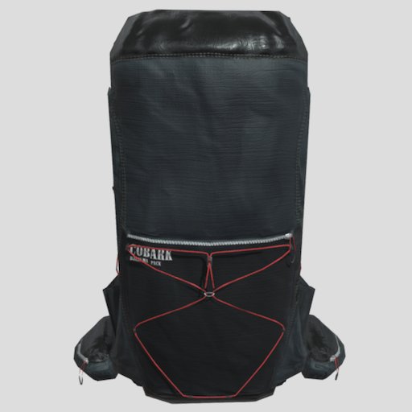
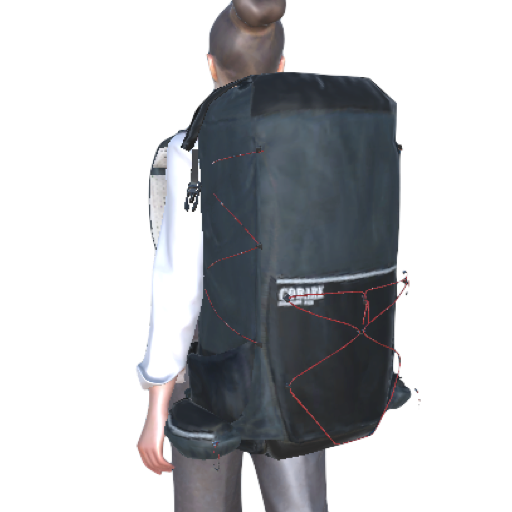

サイトに埋め込める３Dビューア
バーチャル展示会
3Dビューアについて
画像や動画を使う感覚で、サイトに3Dを導入できる仕組みを開発してます。
写真からCGを製作する新技術と、簡単に編集から公開まで行えるエディタで、お手軽＆低コストで導入できます。
このエディタはまだまだ開発途中であり、
突然データを消去
する可能性がございます。 あくまでご確認用でございますので、どうかご了承ください。正式版をお待ちいただけますと幸いでございます。
また、エディタは
スマホではなくPCで
ご利用ください。
詳しく見る

